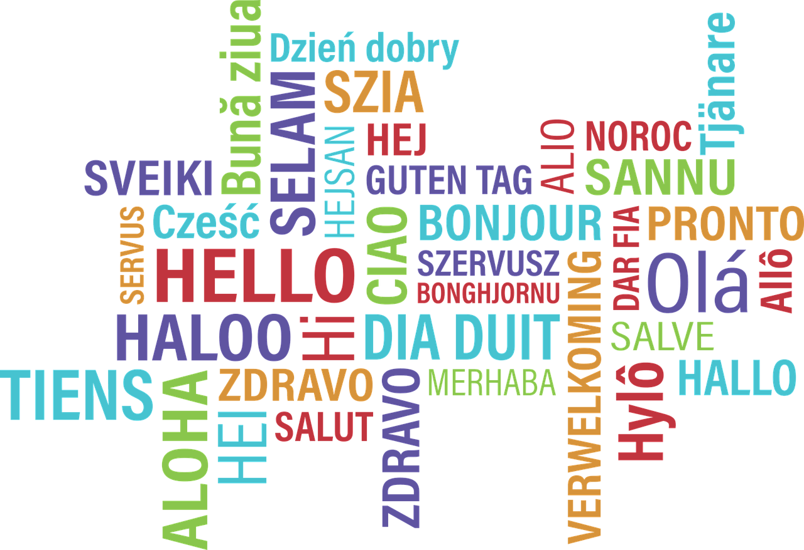

Toggle navigation
বাংলায় ফরাসি ভাষা শিক্ষা
হোম
বিগিনার
এডভান্স
ব্লগ
Facebook
Twitter
ফরাসি শিখুন একদম মায়ের ভাষায়
আজ'ই শুরু করুন
কেনো ফরাসি ভাষা শিখবেন?
পৃথিবীর প্রায় ৩০ কোটি লোক মাতৃভাষা কিংবা দ্বিতীয় ভাষা হিসেবে ফরাসিতে কথা বলেন।
বিশ্বের প্রায় ৫৪টি দেশে এটি ব্যাপকভাবে প্রচলিত।
ফরাসি ভাষা (Français) একটি রোমান্স ভাষা।
যার মূল প্রচলন ইউরোপ মহাদেশে, বিশেষত ফ্রান্স, ইতালি, সুইজারল্যান্ড ও পার্শ্ববর্তী কিছু দেশে।
চীনা, ইংরেজি, হিন্দি, স্পেনীয় এবং আরবি ভাষার পর ফরাসি ভাষা পৃথিবীতে সবচেয়ে বেশি প্রচলিত।
ফরাসি ২৯টি দেশের সরকারি ভাষা; এগুলিকে একত্রে লা ফ্রঙ্কোফোনি (La Francophonie) বা "ফরাসিভাষী" বলে অভিহিত করা হয়।
এছাড়াও ফরাসি ভাষা জাতিসংঘের এবং আরও বেশ কিছু আন্তর্জাতিক সংস্থার দাপ্তরিক ভাষা।
তথ্যসূত্রঃ
উইকিপিডিয়া
